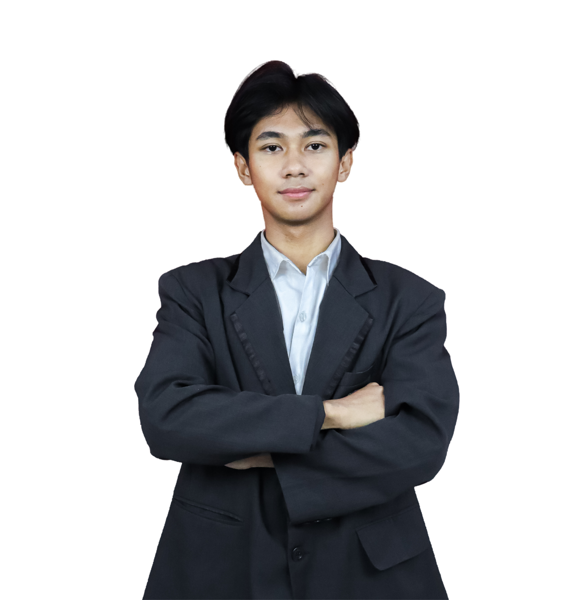

Siswa Desain Komunikasi Visual
Halo! Saya Akbar Nubijak, siswa DKV yang memiliki ketertarikan pada dunia kreatif dan visual. Saya senang mengeksplorasi hal-hal baru dalam desain grafis, fotografi, dan videografi, serta terus mengembangkan kemampuan melalui berbagai proyek dan pengalaman kreatif.
Saya aktif dalam kegiatan OSIS sebagai bagian dari bidang media/PDD dan juga terlibat dalam DKV Production, khususnya pada divisi desain grafis.